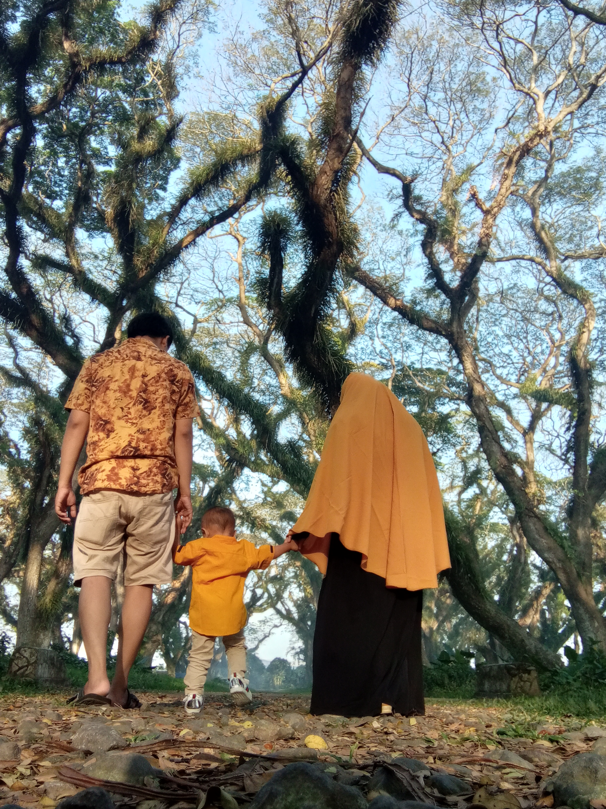

Assalamualaikum...
Saya adalah seorang
Selamat datang di website saya!


"Aku tidak pernah bermimpi tentang kesuksesan. Aku bekerja untuk itu." -Estee Lauder
"Jangan berpikir tentang membuat seni. Selesaikan saja. Biarkan orang lain memutuskan apakah itu baik atau buruk, apakah mereka menyukainya atau membencinya. Sementara mereka memutuskan, buat lebih banyak karya seni." -Andy Warhol
"Aku mulai menyadari betapa pentingnya menjadi seorang antusias dalam hidup. Dia mengajari aku bahwa jika kamu tertarik pada sesuatu, apa pun itu, lakukanlah dengan kecepatan penuh. Rangkullah dengan kedua tangan, peluk, cintai, dan yang terpenting, jadilah bergairah tentangnya. " - Roald Dahl
"Mengingat bahwa kamu akan mati adalah cara terbaik yang saya tahu untuk menghindari jebakan berpikir bahwa kamu akan kehilangan sesuatu. Kamu sudah telanjang. Tidak ada alasan untuk tidak mengikuti hatimu." -Steve Jobs
"Dalam setiap momen pengambilan keputusan, hal terbaik yang dapat kamu lakukan adalah hal yang benar. Hal terbaik berikutnya adalah hal yang salah. Hal terburuk yang bisa kamu lakukan adalah tidak melakukan apa-apa." -Theodore Roosevelt
"Jangan memikirkan kesalahan atau kegagalan kamu; jika tidak, kamu tidak akan pernah melakukan apa pun." -Bill Murray
"Konsentrasikan semua pikiran kamu pada pekerjaan yang sedang dikerjakan. Sinar matahari tidak akan menyala sampai terfokus." - Alexander Graham Bell
"Lakukan sedikit kebaikanmu di manapun kamu berada; itu adalah hal-hal kecil yang baik yang disatukan untuk menguasai dunia." - Desmond Tutu
"Tetaplah dalam keindahan hidup. Perhatikan bintang-bintang, dan lihatlah dirimu berlari bersama mereka." - Marcus Aurelius
"Saya percaya orang-orang hebat melakukan sesuatu sebelum mereka siap." - Amy Poehler
"Saya telah menemukan dalam hidup bahwa ada cara untuk mencapai hampir semua tempat yang kamu inginkan, jika kamu benar-benar ingin pergi." - Langston Hughes
"Jika kamu menghabiskan terlalu banyak waktu untuk memikirkan sesuatu, kamu tidak akan pernah menyelesaikannya." - Bruce Lee